Lymphoma Treatment in Bangalore
Lymphoma is a blood cancer that starts in lymphocytes, the infection-fighting white cells of the lymph nodes and immune system. It often shows up as a painless swelling in the neck, armpit or groin. Many types of lymphoma respond very well to treatment, and many can be cured.

Overview
What is lymphoma?
Your lymphatic system is a network of lymph nodes, vessels, the spleen and bone marrow that helps your body fight infection. Lymphocytes are the white blood cells that do this work. In lymphoma, some lymphocytes change and grow out of control, forming lumps in the lymph nodes or other organs.
Lymphoma is not contagious. In most people it is not inherited, and it is not caused by anything they did. With an accurate diagnosis of the exact type, the right lymphoma treatment in Bangalore can be planned.
The two main groups
- Hodgkin lymphoma: has a typical abnormal cell (the Reed–Sternberg cell). It often affects young adults and is one of the most curable cancers.
- Non-Hodgkin lymphoma (NHL): a large family of lymphomas. Some grow slowly (low-grade) and some grow fast (high-grade). It is more common in older adults but also affects children.
Getting the exact type matters, because each type is treated differently.
Types
Common types of lymphoma
| Type | What it means | How it is usually treated |
|---|---|---|
| Hodgkin lymphoma | Often starts in lymph nodes in the neck or chest; common in young adults. | Chemotherapy, sometimes with radiation; highly curable |
| Diffuse large B-cell lymphoma (DLBCL) | The most common fast-growing non-Hodgkin lymphoma. | Chemo-immunotherapy; many patients are cured |
| Follicular lymphoma | A common slow-growing lymphoma. | Often watch and wait at first; treatment when needed |
| Mantle cell lymphoma | A less common B-cell lymphoma, usually in older adults. | Chemo-immunotherapy, targeted tablets and sometimes transplant |
| Burkitt lymphoma | A very fast-growing lymphoma, more common in children. | Intensive chemotherapy; often curable |
| T-cell lymphomas | Less common lymphomas that start in T-lymphocytes. | Chemotherapy and, in some cases, transplant |
| Lymphoma in children | Hodgkin, Burkitt, lymphoblastic and large-cell lymphomas. | Child-specific protocols with very good results |
Signs & symptoms
Signs and symptoms of lymphoma
Many lymphomas are first noticed as a lump. Watch for:
- Painless swellingLymph nodes in the neck, armpit or groin
- FeverThat keeps coming back without an infection
- Night sweatsDrenching sweats at night
- Weight lossWithout trying
- TirednessConstant tiredness or weakness
- ItchingItchy skin without a rash
- Cough or breathlessnessFrom swollen nodes in the chest
- Tummy swellingPain or fullness from an enlarged spleen or nodes
- Abnormal blood testsLow blood counts or high LDH
Swollen glands are usually caused by infections and settle in two to three weeks. A gland that keeps growing, stays for more than a few weeks or comes with fever, sweats or weight loss should be checked.
See a doctor urgently if you have sudden breathlessness, swelling of the face or neck, severe tummy pain, or weakness or numbness in the legs.
What raises the risk of lymphoma?
In most people, the exact cause is not known. Factors that raise the risk include:
- A weakened immune system, such as with HIV or after an organ transplant
- Some infections, such as Epstein–Barr virus (EBV), hepatitis C and H. pylori
- Autoimmune diseases such as rheumatoid arthritis, lupus or Sjögren’s syndrome
- Older age for most non-Hodgkin lymphomas
- A close family member with lymphoma (a small increase in risk)
- Previous chemotherapy or radiation
When should you see a lymphoma specialist?
- A lymph node is swollen for more than a few weeks or keeps growing
- Swollen glands come with fever, night sweats or weight loss
- A scan shows enlarged lymph nodes or spleen
- A biopsy report says lymphoma and you want a clear plan or a second opinion
- Lymphoma has come back after treatment and you want to know about transplant or CAR-T
Diagnosis
How is lymphoma diagnosed?
A correct diagnosis of the exact type is the most important step. Dr. Neema Bhat may advise:
- 01Lymph node biopsy
Removing a whole node or a core of tissue is the key test. A needle aspiration alone is usually not enough.
- 02Immunohistochemistry & flow cytometry
Identify the exact type of lymphoma.
- 03Blood tests
CBC, LDH, kidney and liver tests, and tests for hepatitis B, hepatitis C and HIV.
- 04PET-CT scan
Shows where the lymphoma is in the body and is used for staging and checking response.
- 05Bone marrow biopsy
Checks whether lymphoma has reached the bone marrow, when needed.
- 06Other tests
Heart and lung checks before treatment, and a lumbar puncture for some fast-growing types.
Stages of lymphoma
Lymphoma is staged from I to IV, based on how many lymph node areas are involved and whether it has spread to other organs. The type of lymphoma, its stage and your overall health together decide the treatment plan. Even advanced-stage lymphoma is often very treatable.
| Stage | What it means |
|---|---|
| Stage I | One lymph node area or one organ. |
| Stage II | Two or more lymph node areas on the same side of the diaphragm. |
| Stage III | Lymph node areas on both sides of the diaphragm. |
| Stage IV | Spread to organs such as the liver, lungs or bone marrow. |
Treatment
Lymphoma treatment options
Your lymphoma treatment in Bangalore depends on the type and stage of lymphoma, your age and overall health. Dr. Neema Bhat creates a plan for you that may include:
Chemotherapy
Combinations of medicines given in cycles, usually as day-care treatment.
Immunotherapy
Antibody medicines such as rituximab that help the immune system attack B-cell lymphoma; often given with chemotherapy.
Targeted therapy
Tablets and newer medicines that block signals lymphoma cells need to grow, for selected types.
Radiation therapy
For lymphoma in one area, or to treat a bulky node after chemotherapy.
Autologous stem cell transplant
High-dose treatment followed by your own stem cells, mainly for lymphoma that has come back. Learn more
CAR-T cell therapy
For selected relapsed lymphomas, where suitable and available.
Watch and wait
Some slow-growing lymphomas need only regular check-ups until treatment is needed.
Supportive care
Infection prevention, vaccines, nutrition, and help with side effects.
Follow-up
Regular visits and scans after treatment to watch for relapse and long-term effects.
Do not take steroids or start treatment before a biopsy. They can shrink the lymph node for a while and make the exact type harder to diagnose.
Life during and after lymphoma treatment
- Call the team at once if you get a fever (38°C or higher) during chemotherapy. Low white cells make infections serious quickly.
- Wash hands often, avoid crowds and eat freshly cooked food when counts are low.
- Hair loss from chemotherapy is temporary; hair grows back after treatment.
- Stay gently active; most people can return to work or school after treatment.
- Keep every follow-up appointment, even when you feel well.

About the doctor
Dr. Neema Bhat
- SpecialityHematologist, Pediatric Oncologist & Bone Marrow Transplant Specialist
- EducationMD (USA) · Fellowship (FAAP) in Pediatric Hematology, Oncology & Bone Marrow Transplantation, Penn State Health, USA
Dr. Neema Bhat is a Haemato-Oncologist in Bangalore with more than ten years of experience treating blood disorders and blood cancers in children and adults. For lymphoma, she makes sure the exact type is diagnosed and plans treatment matched to it, for children and adults.
FAQs
Quick answers to the questions patients ask most about lymphoma.
01Is lymphoma curable?
Many types are. Hodgkin lymphoma and many fast-growing non-Hodgkin lymphomas, such as diffuse large B-cell lymphoma, are often cured. Slow-growing types can usually be controlled for many years.
02What is the first sign of lymphoma?
The most common first sign is a painless swelling of a lymph node in the neck, armpit or groin. Fever, night sweats, weight loss and tiredness can also occur.
03Is every swollen lymph node lymphoma?
No. Most swollen glands are caused by infections and settle in two to three weeks. A node that keeps growing, stays for weeks, or comes with fever, sweats or weight loss should be checked.
04How is lymphoma diagnosed?
A lymph node biopsy is the key test. The tissue is examined to find the exact type, and a PET-CT scan shows the stage.
05What is the difference between Hodgkin and non-Hodgkin lymphoma?
They are different families of lymphoma, identified by how the cells look under the microscope. They are treated differently, which is why the exact type matters.
06Is lymphoma the same as leukemia?
No. Both are blood cancers, but lymphoma mainly starts in the lymph nodes, while leukemia starts in the bone marrow and blood. Hematologists treat both.
07How long does lymphoma treatment take?
Most chemotherapy-based treatment takes about 3 to 6 months, given in cycles. Some slow-growing lymphomas only need regular monitoring.
08Is a bone marrow transplant needed for lymphoma?
Not for most people. An autologous stem cell transplant is mainly used when lymphoma comes back after first treatment.
09Can lymphoma come back after treatment?
Sometimes. Regular follow-up helps catch it early, and there are effective options for relapsed lymphoma, including transplant and CAR-T therapy for selected patients.
10Can children get lymphoma?
Yes. Hodgkin lymphoma and some fast-growing non-Hodgkin lymphomas occur in children and teenagers, and results with child-specific treatment are very good. Dr. Neema Bhat is a pediatric hemato-oncologist.
A lump that won’t go away?
Swollen glands, fever or night sweats? Get them checked by a specialist. Book a consultation for lymphoma treatment in Bangalore with Dr. Neema Bhat today.
- +91 78997 56677 · Call or WhatsApp
Medical disclaimer: This page is for general information only and is not a substitute for medical advice. Please consult a doctor for diagnosis and treatment.